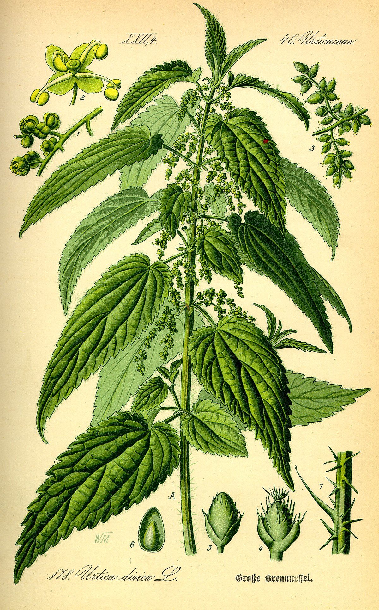
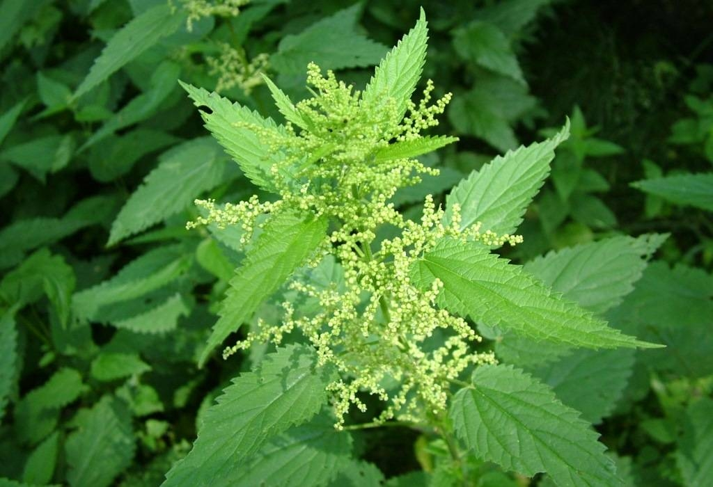

Кропива (лат. Urtica dioica) - багаторічна рослина, відома своїми
протизапальними, діуретичними та імуномодулюючими властивостями.
Вона здатна позбавляти організм від токсинів і сприяє виділенню сечі,
що сприяє зменшенню запалення.
Це пов'язано з вмістом рослини біологічно активних сполук,
таких як флавоноїди, фенольні кислоти, селен і вітамін С.

Кропиву використовують в медицині для лікування захворювань сечовивідних шляхів,
запалення слизових оболонок травного тракту та анемії.
Вона також може бути використана для зовнішнього вживання,
обтираючи шкіру при укусах комах, алергічних висипаннях та інших дерматологічних проблемах.
Молоде листя кропиви також можна додавати до їжі для покращення вітамінного складу страв.
Перед використанням кропиви для лікування слід консультуватися з лікарем або фахівцем у сфері здоров'я,
особливо при наявності серйозних медичних проблем або алергій.